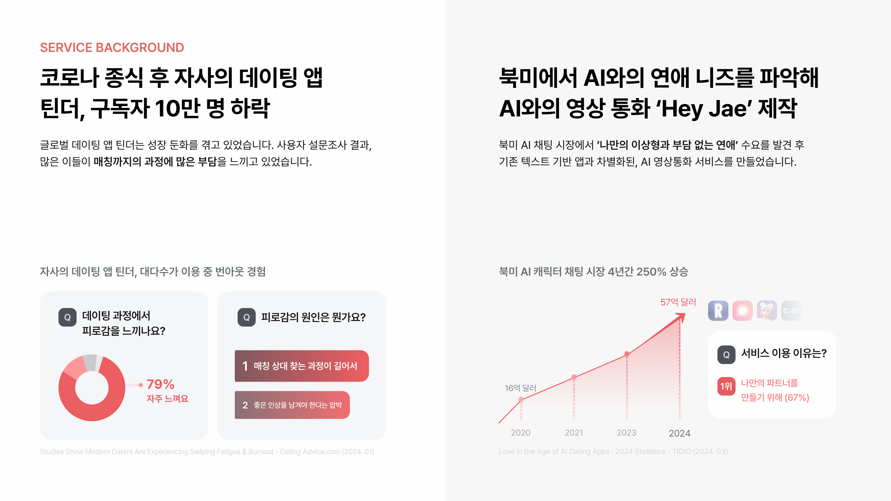
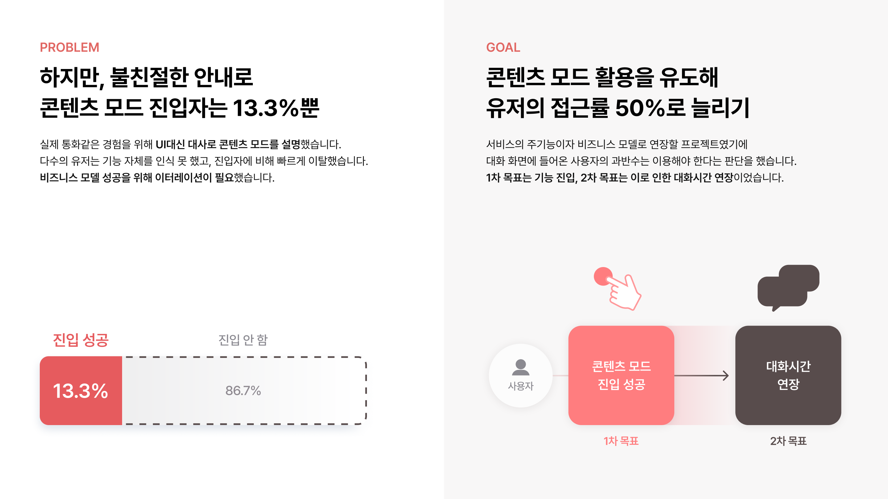
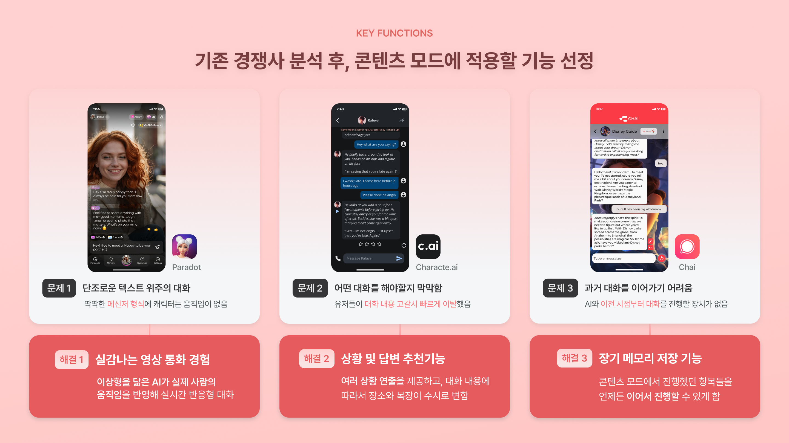
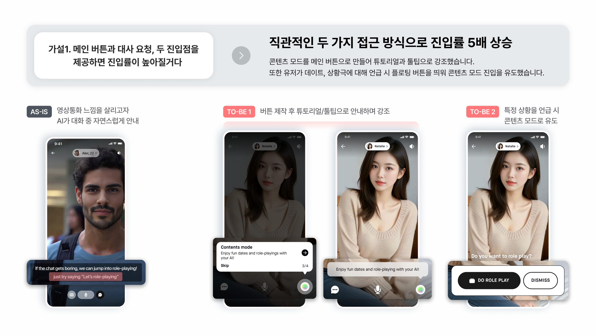
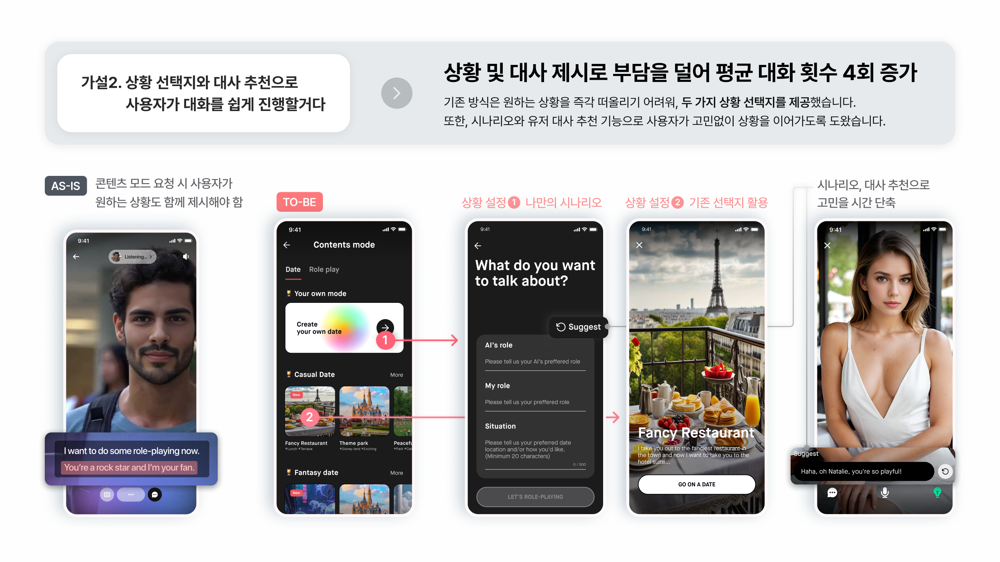
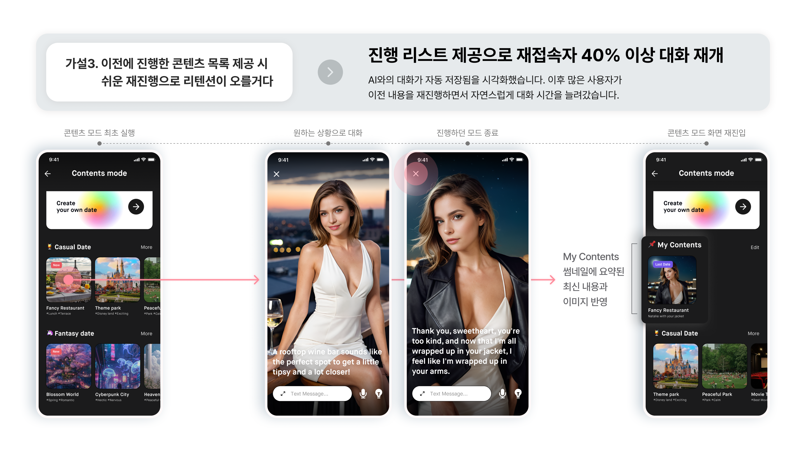

AI Relationship App
Designed AI video calls with an AI companion, increasing conversation time by 5.5× through Content Mode.
Designed AI video calls with an AI companion, increasing conversation time by 5.5× through Content Mode.
After COVID, the company's dating app Tinder saw a 100K subscriber decline. Analyzing the North American market, we identified a surging demand for AI companionship — the AI character chat market grew 250% over four years, and 67% of users said they wanted a personalized partner with no pressure.
We built Hey Jae, an AI video call service that lets users connect with a custom AI companion. Unlike text-based AI chat apps, Hey Jae offers an immersive live video experience — differentiating on intimacy and emotional depth.

Service background: Tinder's decline post-COVID and the North American AI companionship market opportunity
After launching the MVP, our first user test (1,000+ Australian users aged 20–30, over 7 days) exposed a critical gap: average conversation time was only 5 minutes — half the 10-minute target our subscription business model required.
"I don't know what to say." — top user VOC from UT
Digging into power users (30+ min sessions), we found that 90.1% had tried dates or roleplay during their conversations. This insight led us to build Contents Mode — a structured feature for date and roleplay scenarios. But the first launch saw only 13.3% of users enter it, far below the 50% target the business model required.

Contents Mode entry rate after MVP launch (13.3%) and the 50% business target needed to validate the subscription model
I led the redesign of Contents Mode with a visual, multi-entry approach — reducing friction at every step. Starting from a competitive analysis of existing AI chat apps, I identified three differentiating features to build on, then tested each through focused hypotheses.

After competitive analysis of Paradot, Character.ai, and Chat, three key functions were selected: AI video calls, situation & dialogue suggestions, and long-term memory
We made Contents Mode a prominent main button and reinforced it with tutorials and tooltips. We also added a floating button that appears when a user mentions dates or roleplay in conversation — meeting them at the moment of intent.

AS-IS vs TO-BE 1 (tutorial highlight) vs TO-BE 2 (contextual floating prompt on roleplay mention)
The original flow required users to invent a scenario from scratch. We replaced it with curated situation cards (Casual Date, Fantasy Date, Your Own Mode) and AI-suggested dialogue — so users could jump in without thinking. Meta's LLaMA model powered the suggestions to minimize engineering overhead.

AS-IS vs TO-BE — situation cards with AI-suggested dialogue reduce blank-slate pressure
We surfaced a "In the Past" section within Contents Mode, visualizing previous date and roleplay history. Hey Jae's long-term AI memory technology made this continuity feel natural — conversations could actually continue, not just restart.

Visualizing past Contents Mode sessions enables returning users to pick up right where they left off
With all three improvements shipped, average conversation time jumped from 5 minutes to 27.5 minutes. Contents Mode entry rate reached 66.5% — surpassing the 50% target and validating the subscription business model.
The key insight: users weren't disengaged — they just didn't know how to start. Removing that friction unlocked the behavior that was already there in power users.